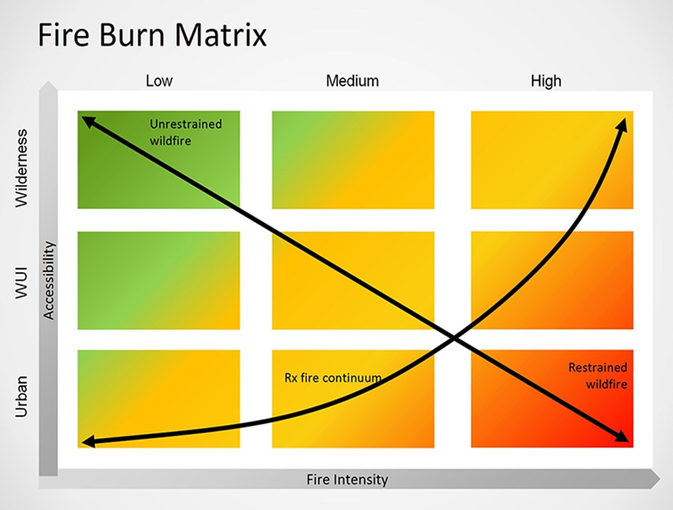

2. Fire#
Tinderbox to Treatment: Leveraging forest restoration funds
2.1. Caldor#
In April 2015, I drove up California Highway 50 along the American River Canyon to the Horsetail Falls trailhead to climb Pyramid Peak. There were still patches of snow on the ground, and the water coming down the falls was gushing, making for scenic views up the canyon. While still hiking up through the mixed conifer stands on the trail, I noticed how dense the forest was with small-diameter trees. I left the trailhead briefly, walked through the pines and firs, and was struck by the understory’s excessive accumulation of downed wood. It was scary and surprisingly dry at this point in the spring. These conditions were due to a century of fire suppression and drought conditions. The chances for severe wildfire here were great. A similar pattern exists in nearly every forested system of the Sierra Nevada mountains.
{kind=link}
Photo credit: Noah Berger/AP
Six years later, the forest needed just one spark to explode the Caldor Fire, which affected 221,835 acres across three counties over 68 days CAL FIRE, 2021. Over half the burned acres were classified as high or very high severity.
Reducing these harmful conditions will require forest health solutions that integrate communities, infrastructure, ecological thinning, and responsible biomass utilization, which are critical to reducing the negative impacts that unhealthy forested systems pose. Addressing unnatural conditions due to past forest and fire management regimes is a massive undertaking, already garnering billions of dollars from state and federal resources and countless organizational resources. However, getting to the scale needed is challenging due to localized environmental conditions, organizational capacity, funding, and environmental compliance.[1]
2.2. Theory of change#
Together with partners and a literature review, we created a simplified situation model connecting uncharacteristic fire results from fire suppression on public and private lands exacerbated by climate change (Fig. 2.1). The situation model acts as a theory of change and reads from right to left where the forested ecosystems are impacted by stressors such as disease, fuel load accumulation, and increased wildfire size & severity. Those stressors are impacted by threats such as fire suppression and greenhouse gas emissions. The yellow boxes are proposed interventions to reduce those threats, including thinning, prescribed fire, and increased funding for wood utilization.
Fig. 2.1 Situation model of fire’s impact on forested ecosystems and potential interventions to reduce impacts.#
Results chains link the interventions identified (and prioritized) in the situation model to interim and long-term results (Fig. 2.2). The treatments identified in the results chain focus on local-level interventions such as thinning, biomass utilization, and prescribed fire. Although based on widely agreed upon forest restoration interventions, the models explicitly show the links between wildfire, forest health, and beneficial outcomes and follow the conventions outlined by Margoluis and Salafsky [1998]. The results chain effectively allows project managers to track their interventions to project objectives and goals. The results chain acknowledges that thinning will decrease fuel loads and increase forest health. For additional forest business & health examples of using these models programmatically, see Russell et al. [2024].

Fig. 2.2 Results chain linking interventions with interim results and outcome objectives.#
2.3. Solutions#
Walking the talk and progressing from models to solutions is a significant hurdle, especially at the landscape scale. Proposed solutions to reduce the negative impacts of wildfires generally fall into three buckets: funding, scaling, and capacity, although each local situation is nuanced and contains different approaches.
2.4. Funding#
Substantial state and federal funds are available for forest health projects. California is investing in forest health, betting that increased funding for thinning, prescribed fire, wood processing infrastructure, and business development projects will reduce wildfires. This increase in funding, capacity, and resources is part of an all-hands-on-deck approach to address forest health throughout California. However, public funds cannot cover all project needs. Furthermore, engaging the private sector is critical to meeting the challenge. How can public dollars be maximized to reduce wildfire risk while restoring forested stands after a fire?
The Yuba Forest Resilience bond
“…helped us to finance prevention strategies to stave off the ever-present risk of catastrophic wildfire that can damage national forests and neighboring lands.” Eli Ilano, Tahoe National Forest Supervisor
A potential solution is to leverage and complement public funds with private capital, increasing the number of projects that return an investment to investors once meeting predetermined outcomes. The California Wildfire Innovation Fund leveraging private investment in fire mitigation is an example of generating competitive financial returns to solve this problem (Blue Forest, 2024). Another example is fund aggregation, such as the Southern Arizona Forest Fund, where the National Forest Foundation acts as a central point to raise funds for watershed restoration projects in the Coronado National Forest.
Blended, nontraditional funding strategies such as these have three distinct advantages over traditional grants and loans: They shift risk from project implementers or agencies to investors, provide funding faster by providing capital to implementers at project start rather than reimbursement-driven grants, and create new funding sources where funding may be scarce or not enough to address the problem at hand.
One critical barrier to developing non-traditional finance is the lack of payors or entities that repay initial restoration investments, ideally with a modest return. For example, the Yuba Water Agency pays investors in the Yuba Forest Resilience Bond when predetermined outcomes related to watershed forest health and sedimentation reduction projects are reached following project implementation and validation. Please see Odefey and Russell [2020] for a full description of payors and impact bonds.
2.5. Scale#
Following the Caldor Fire, CAL FIRE awarded the El Dorado Resource Conservation District (RCD) funding as part of a coordinated and centralized Emergency Forest Restoration Team to prioritize post-fire restoration projects. Known as the Healthy Eldorado Landscape Partnership HELP, the group has coordinated landscape-scale forest restoration efforts in the Eldorado National Forest. A similar effort is underway following the Dixie Fire on the Plumas and Lassen National Forests, which is helping to create cost and time efficiencies over large landscapes.
Let it burn
Future fire threats are mainly in the wildland-urban interface []Prescribed fire and letting wildfires far away from communities burn may be the most critical way to scale forest health restoration and reduce costs associated with fire suppression. The fire burn matrix below shows a decision framework for allowing fires of low to medium intensity to burn in the wilderness and remote areas of the wildland-urban interface (WUI). The prescribed fire (Rx) continuum depicted in the figure shows where more prescribed fire and thinning should be applied to reduce the risk of dangerous fires near urban areas. The orange to red areas of the matrix are prioritized situations to suppress wildfire [Russell and Holst, 2019].

Other strategies for scaling efforts may include outreach to support stakeholder understanding of the broader forest system, go beyond localized thinking, and consider how to replicate pilots through local solutions and policy-based regional solutions [Salafsky et al., 2021]. At a vast scale, the USFS ‘Confronting the Wildfire Crisis Plan’ aims to treat up to 20 million acres of National Forest Lands and 30 million acres of other federal, Tribal, State, and private lands with partners [USFS, 2022]. By increasing the scale of this work, other factors such as ecological function, biodiversity, ecosystem services, climate adaptation, socio-cultural equity, and human well-being factors are more relevant [Schuster et al., 2022].
2.6. Capacity#
Building a workforce that can ably plan integrated projects, develop creative financing solutions, implement the needed array of forest treatments, utilize the removed biomass, safely apply prescribed fire, and measure the outcomes is part of a fire and finance effort. Increasing local capacity is critical for scaling efforts to restore forests following fire and build more resilient rural communities. Capacity building is impossible without community-based qualified personnel and a sustainable, ecologically sound forest health economy.

Fig. 2.3 A team of firefighters prepare for a controlled burn in Oregon. © Mitch Maxson.#
Across the country, a lack of government capacity and infrastructure to distribute funding is a critical challenge faced by project proponents and supporting agencies [Labs, 2023]. However, massive strides are being made through coordination at the state and local levels. CAL FIRE’s Wood Products and Bioenergy Program has an open request for proposals to fund wood products businesses and build capacity. We can solve multi-disciplinary challenges to implementing forest restoration, energy, safety, and equity by combining best practices and methods from various disciplines. Healthier and more resilient forest ecosystems will result from identifying the relationships between the issues and barriers to increased pace and scale and offering integrated approaches. Testing and refining pilot efforts will be essential to the learning process and ensuring we meet social and ecological goals.
Training a workforce to work in the woods is a critical current and future need. Many community colleges are creating programs to address this for work as variable as forestry to truck driving. For example, Lake Tahoe Community College started a forestry program teaming with the California Conservation Corps and local agencies. Shasta College has an associate’s degree in science in forest science and technology.
California Conservation Corps
“The CCC’s partnership with education institutions is extraordinarily beneficial and one we aim to replicate across the state. It’s a huge benefit to our Corps members, who get exposure to college and degree programs that can help them launch well-paying and meaningful careers in forestry and other fields. Together, we’re helping develop a highly-trained workforce.” Former California Conservation Corps Director, Bruce Saito
2.7. Parting Thoughts#
Capacity, scale, and funding will not be the only items needed to change California and the West’s wildfire situation. Policy change, community health, increased private sector engagement, and more diversified equity and cultural approaches are needed to surmount this life-threatening situation. Volatile forest conditions will not change overnight. Nevertheless, future disasters can be avoided by considering how existing and new approaches to mitigate adverse conditions can be exponentially ramped up and coordinated throughout the Western United States, such as strategic thinning followed by prescribed fire treatments across the landscape (Fig. 2.4).
Fig. 2.4 Thinned mixed conifer stand showing open stand structure.#
Endnotes